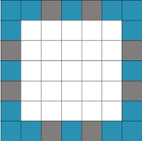

Okay, we'll be playing a little game. Imagine an island (okay, a 5x5 grid). This island is surrounded by water, and there are 6 bridges off of the island. On the island is a hungry cat, and a scared mouse.
The cat is hungry, but it's his island, and he won't leave it. The mouse, of course, will escape, if he finds a bridge. Sadly, in his fright, he might run into the water and drown (had a terrible experience as a young mouse, never learned to swim).
At the beginning of the game, both the cat and the mouse are placed randomly on the island proper.
The bridges are roughly evenly–spaced, 2 on each side.
 I'd recommend extending the coordinate system to include the bridges and the immediately surrounding water.
Create an Animal abstract class. It'll have a protected
attribute, of type Point, its location on the map, and a
private String attribute, the animal's name. You'll need to add other
attributes, as well.
It'll define these methods:
String getName() Point getLocation() void setStartLocation() Animal will have a single constructor, that takes a
String (the animal's name), a Random object
(the single random number generator that everybody will use). It'll store
these values as instance variables (attributes).
Animal( String name, Random rng )It'll also declare an abstract method:
void move() Inherit from Animal to create a Cat class;
override the move method, to randomly move north, south, east
or west. Again, the cat will not jump in the water, nor will it cross a
bridge. It'll have a single constructor, that takes a String, calls the
parent class' constructor to set the name.
Also create a Mouse class from Animal; again,
override the move method, to randomly move north, south, east
or west. If the mouse drowns or escapes he won't make any more moves. You
might need to keep (and initialize) another attribute, to track the mouse's
mobility. It also has a single constructor, to set the name.
Finally, create a Chase class, which'll have a static
playGame method, which plays a single game, and returns a
status (cat had a snack, mouse escaped, mouse drowned).
Randomly choose a starting point for each animal. To be fair, if they start on the same spot, pick another start for one of the animals. The mouse moves first; if he lands on a square that has a bridge he escapes, the game is done. If he falls in the water, the game is also done. Then the cat gets to move; if he lands on the same spot, he gets a snack, and play is over.
In the Chase class, write a main method
which'll play the game 30 times, and report the outcome, to standard out, in
a single line.
You may add any (non-public) helper methods to any class that you find useful.
You'll want to create a Random object, and use the
nextInt( n ) method.
There will be only one generator for the entire program; create it (once) in the main driver, and pass it to your animals as you create them.
None
You are to print the result of each of 30 trials to stdout, one result per line, single spaced. After all the trials print a blank line, then report 3 statistics: The % of times the mouse escaped, drowned, and was eaten.